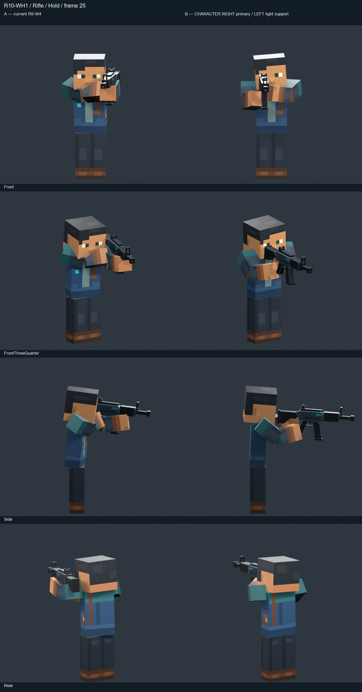
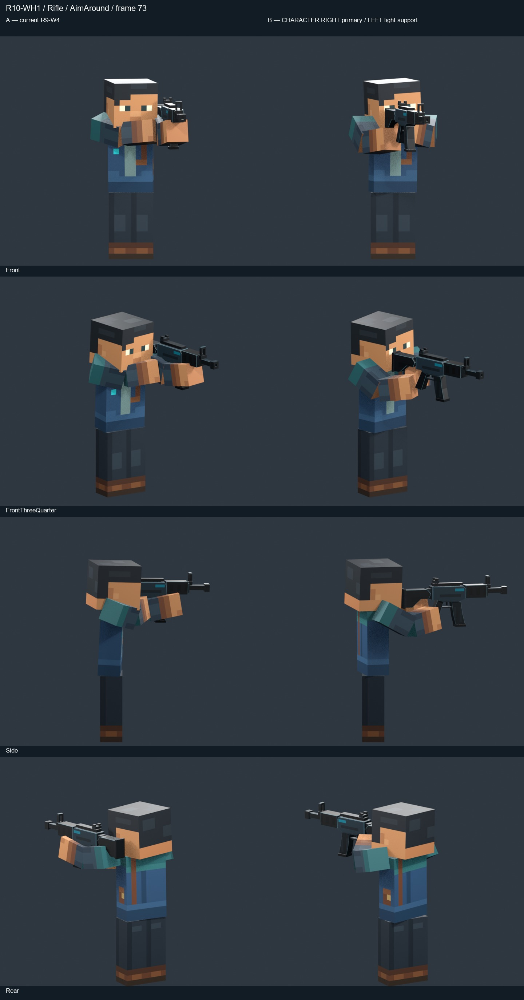
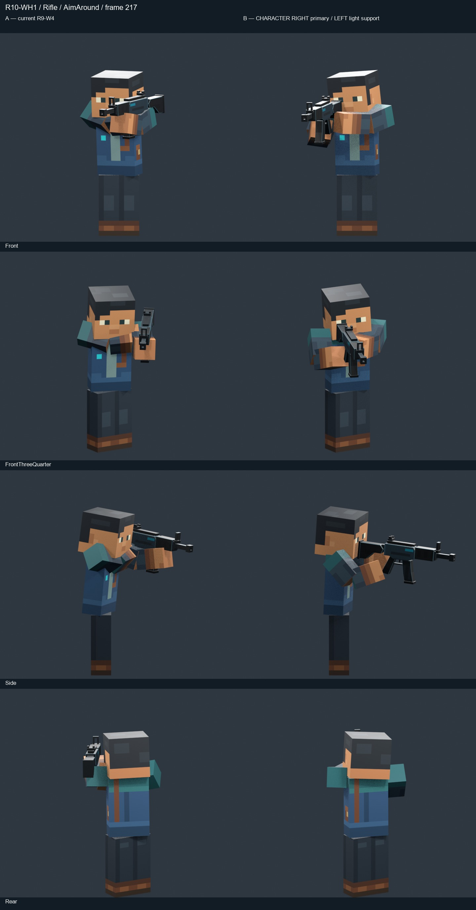
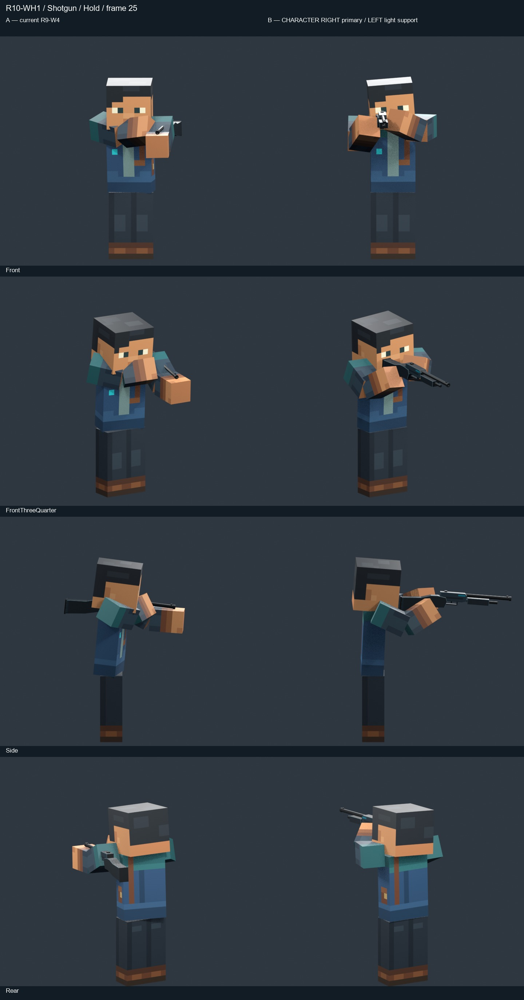
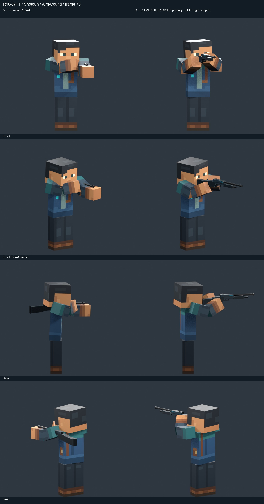
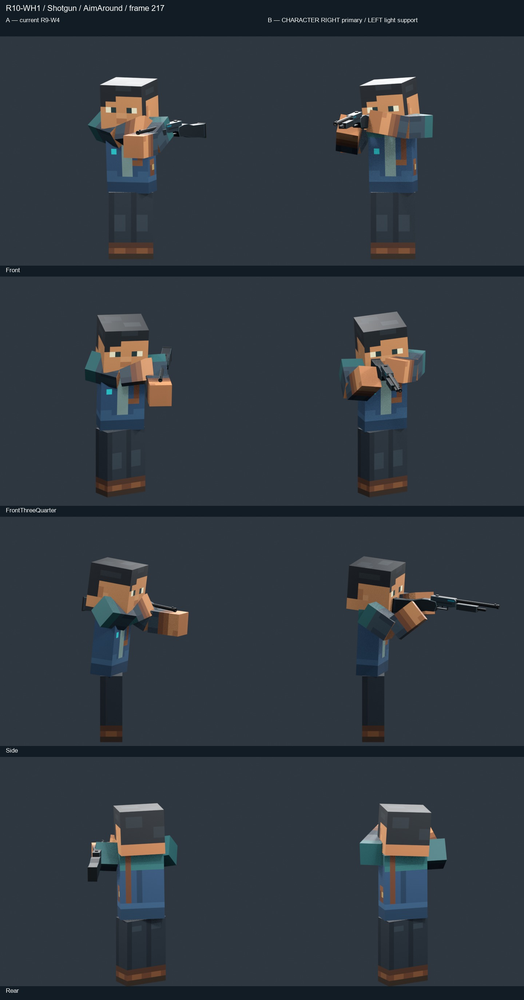
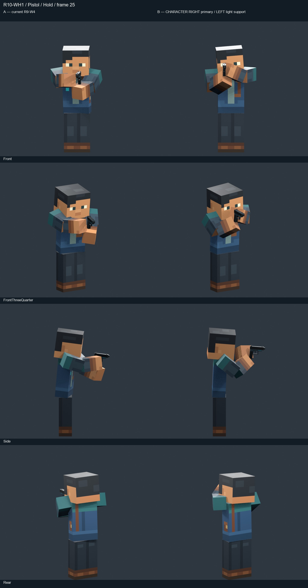
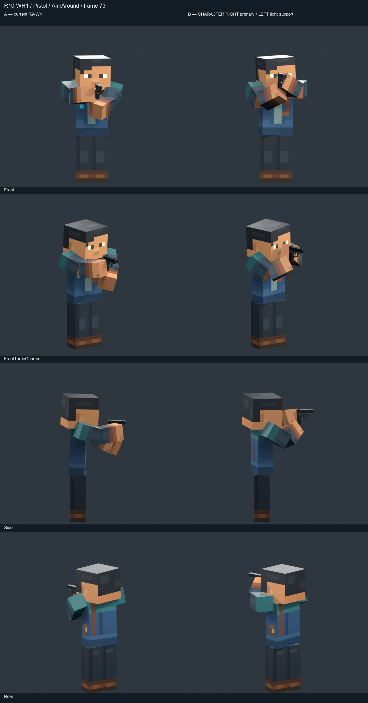
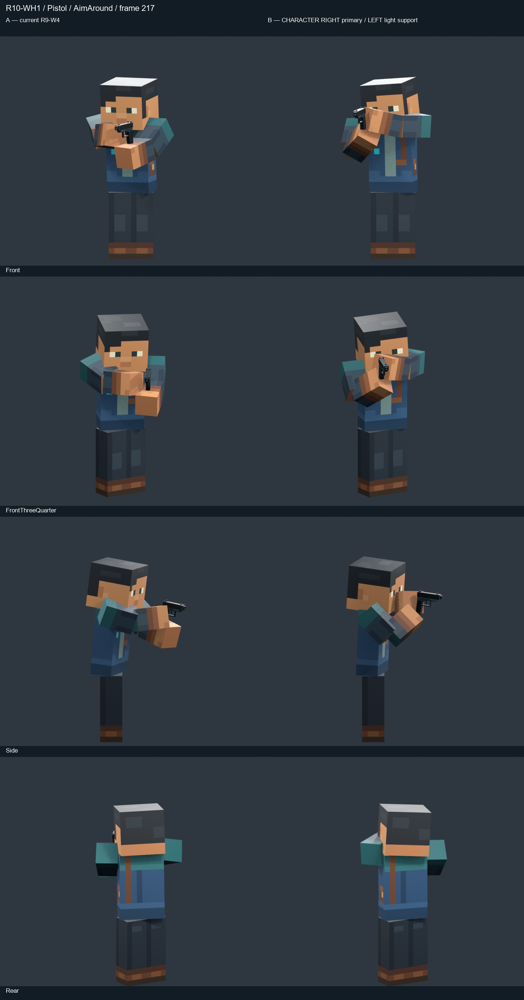

ARTISTIC STATUS: AWAITING HUMAN REVIEW • STUDY ONLY
The character's RIGHT arm owns the gun. In the neutral front view that is screen-left. The LEFT arm crosses the body for a shallow supporting touch. The right-eye relationship and head lean remain through living motion.
Judge ownership, weight, support softness and motion by viewing the clips. Geometry tests cannot establish artistic approval. Current locomotion is preserved; no production migration.
A: exact R9-W4 result. B: new character-right ownership, left light support and right-eye sight relationship.



A: exact R9-W4 result. B: new character-right ownership, left light support and right-eye sight relationship.



A: exact R9-W4 result. B: new character-right ownership, left light support and right-eye sight relationship.



Primary references: reference 1 / reference 2.